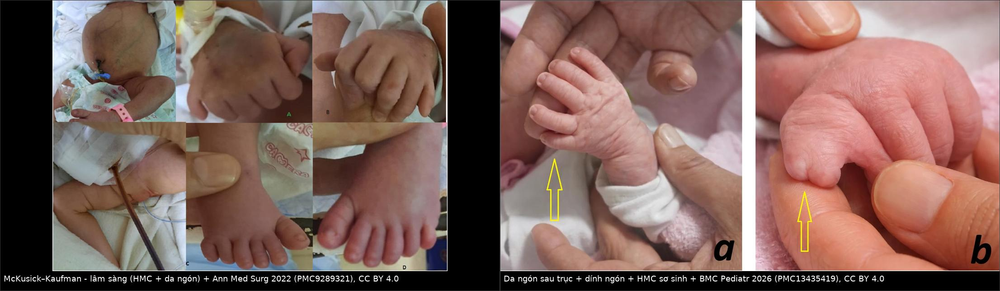
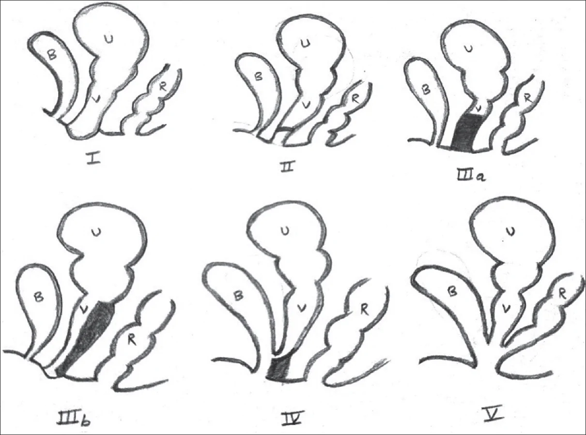
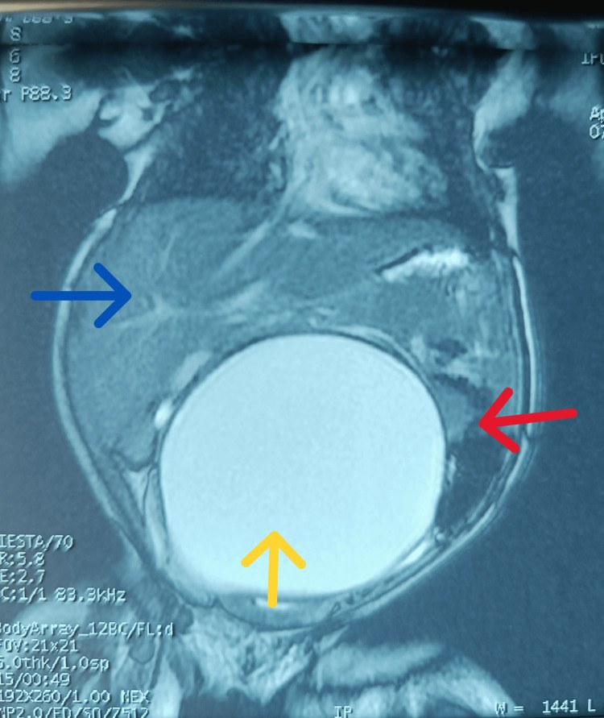
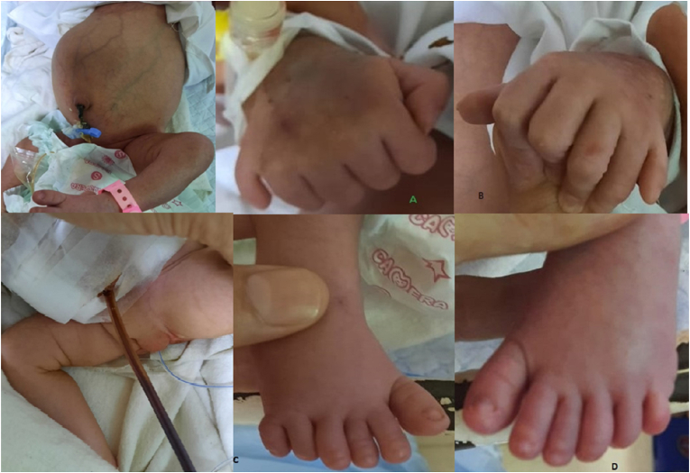
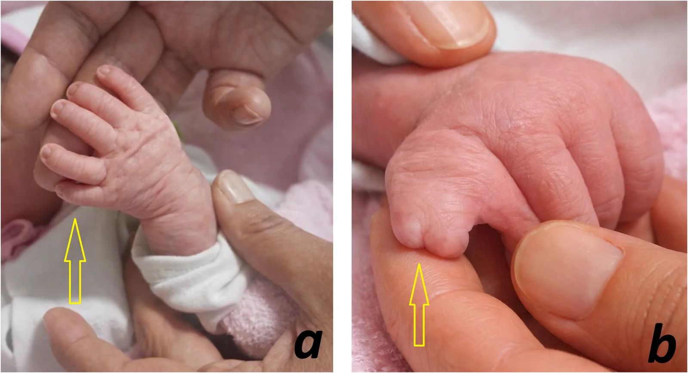

1745 — Hội chứng McKusick–Kaufman & ứ máu–ứ dịch âm đạo ở sơ sinh / McKusick–Kaufman syndrome and neonatal hydrometrocolpos
Tags: pattern:u-dich-am-dao pattern:u-mau-am-dao pattern:da-ngon-tay pattern:khong-hoi-am vung:am-dao vung:tu-cung vung:tieu-khung score:Gupta-Sharma protocol:US-truoc-sinh protocol:MRI-tieu-khung protocol:sinh-duc-do incidentaloma:hydrometrocolpos
Mức chắc chắn (certainty): tổng hợp y văn (literature synthesis) — số liệu dịch tễ và phân loại từ loạt 17 bệnh nhi (PMC13614824, CC BY-NC-SA); ca nguyên văn McKusick–Kaufman có số đo và kết cục (PMC9289321, CC BY); ca thứ ba của dị tật thanh quản ba thuỳ kèm ứ máu âm đạo (PMC13435419, CC BY); ca đọc nhầm thành nang mạc treo (PMC12503192, CC BY). Không có thử nghiệm lâm sàng nào cho hội chứng này — mọi ngưỡng dưới đây là ngưỡng mô tả/đồng thuận.
1. Tổng quan bệnh học – cơ chế hình ảnh
- Định nghĩa: ứ máu–ứ dịch âm đạo (hydrometrocolpos, HMC) là giãn âm đạo ± buồng tử cung do tắc dòng ra âm đạo, tích dịch nhầy/mủ/máu. Tần suất 1:16.000 trẻ gái sinh sống (PMC13614824); 15% khối bụng ở trẻ gái sơ sinh có nguyên nhân là tắc âm đạo (PMC9289321) — nghĩa là hễ gặp khối nang vùng chậu ở bé gái mới sinh thì HMC nằm trong 3 chẩn đoán đầu.
- TẠI SAO sơ sinh đã ứ dịch trong khi chưa hành kinh: estrogen của mẹ qua nhau thai kích thích tuyến nhầy cổ tử cung – âm đạo tiết dịch; dịch không thoát được vì tắc → ứ. Sau sinh, estrogen mẹ giảm dần nên khối có thể nhỏ lại nếu tắc nhẹ, còn tắc hoàn toàn thì tiếp tục to ra và chèn ép.
- TẠI SAO hình ảnh là "nang dịch đường giữa": dịch nhầy đặc, nghèo tế bào → siêu âm (ultrasound, US): khối trống âm (anechoic) hoặc giảm âm kèm hồi âm mịn lơ lửng (nhầy đặc, tế bào bong). CT: 0–20 HU với dịch nhầy loãng, có thể 20–40 HU khi nhầy đặc/mủ; không ngấm thuốc phần dịch, chỉ thành ngấm. MRI: T2 rất sáng (nước tự do), T1 thay đổi theo nồng độ protein (nhầy đặc → T1 hơi sáng) và theo máu (methemoglobin → T1 sáng); không có thành đặc ngấm thuốc — đó là chốt loại u đặc.
- Chuỗi chèn ép quyết định tiên lượng (đọc theo thứ tự giải phẫu):
- khối nằm giữa bàng quang (phía trước) và trực tràng (phía sau) → đẩy bàng quang lên trước;
- chèn niệu quản – cổ bàng quang → ứ nước–niệu quản hai bên (hydroureteronephrosis); trong loạt 17 bệnh nhi, cả 17 đều có ứ nước thận (PMC13614824);
- thai kỳ: chèn ép → thiểu ối (oligohydramnios) → giảm sản phổi (lung hypoplasia); hiếm hơn có phù thai (hydrops) do chèn tĩnh mạch chủ dưới;
- sau sinh: bí tiểu, nhiễm khuẩn niệu tái diễn, táo bón, chèn trực tràng (hiếm khi thủng ruột).
- McKusick–Kaufman (MKKS) là gì: hội chứng di truyền lặn nhiễm sắc thể thường, gen MKKS (BBS6) ở 20p12 (OMIM 604896; locus BBS6 605231) — chính là một trong các gen của Bardet–Biedl. Tam chứng: ứ máu–ứ dịch âm đạo + da ngón sau trục (postaxial polydactyly) + dị tật tim bẩm sinh; ba dấu hiệu này có mặt ở 93–95% bệnh nhân, da ngón đơn thuần gặp ~90% (PMC9289321). Trẻ trai cùng gia đình có thể chỉ có da ngón ± lỗ tiểu đóng thấp (hypospadias) / tinh hoàn ẩn — không có tử cung nên không ứ dịch.
- Con số của ca nguyên văn MKKS (PMC9289321): sơ sinh nữ 39 tuần, 2,9 kg, phát hiện khối bụng trên siêu âm tuần 36 kèm giãn não thất bên; sau sinh có da ngón sau trục tứ chi + bàn chân khoèo (pes cavus), CT/X-quang xác nhận khối nang giữa bàng quang và trực tràng, soi bàng quang + chụp sinh dục đồ xác nhận vách ngang âm đạo; siêu âm tim có lỗ bầu dục mở (PFO) shunt trái–phải nhỏ; hút dưới hướng dẫn siêu âm ~1 L dịch → hết khó thở, đặt dẫn lưu tạm, ra viện ngày 7. Đây là minh hoạ rằng giải ép là can thiệp cứu hô hấp, không phải "theo dõi khối lành tính".
2. Mẫu hình + chẩn đoán phân biệt theo tầng tắc (Gamut)
- Mẫu hình chung: bé gái sơ sinh khối bụng dưới đường giữa ± bí tiểu ± phồng môi lớn/tiền đình, siêu âm thấy khối nang hình con nhộng sau bàng quang; hoặc thai 25 tuần trở đi có khối nang vùng chậu thai nữ (phát hiện sớm nhất 25 tuần, đa số ở ba tháng cuối hoặc sau sinh — PMC13614824).
- Gamut theo TẦNG tắc — phân loại Gupta–Sharma (I–V), nhớ "M – V – T – N – C":
- Màng (thấp, màng trinh): màng trinh kín (imperforate hymen) — hay gặp nhất, màng phồng xanh tím ở tiền đình khi rặn;
- Vách (giữa): vách ngang âm đạo (transverse vaginal septum) — khối to, không thấy màng phồng;
- Teo (cao): teo âm đạo đoạn xa (distal vaginal atresia) — IIIa không phồng mông, IIIb có phồng mông;
- Nang niệu sinh dục: teo âm đạo + còn xoang niệu sinh dục (urogenital sinus) — âm đạo và đường niệu đổ chung một ống;
- Cloaca: cloaca tồn tại (persistent cloaca) — một lỗ sinh dục duy nhất, thường kèm dị tật hậu môn–trực tràng.
- Gamut theo NGUYÊN NHÂN HỘI CHỨNG (khi có da ngón/bất thường khác):
- MKKS: HMC + da ngón sau trục + tim bẩm sinh; không thoái hoá võng mạc lúc nhỏ;
- Bardet–Biedl (BBS): da ngón + béo phì, suy giảm thị lực do thoái hoá võng mạc (đến mù ~20 tuổi), suy sinh dục, chậm phát triển, bất thường thận — ở sơ sinh chưa phân biệt được với MKKS;
- Ellis–van Creveld (EVC): loạn sản sụn–xương sườn ngắn, da ngón, tim bẩm sinh, không ứ máu âm đạo;
- Pallister–Hall: u mô thừa vùng dưới đồi, thanh quản hai/ba thuỳ, da ngón, hậu môn không lỗ;
- OHVIRA / Herlyn–Werner–Wunderlich: tử cung hai sừng + một nửa âm đạo tắc + thận cùng bên không có — ứ máu một bên, thường lộ ở tuổi dậy thì nhưng có thể ứ ngay sơ sinh;
- Dị dạng hậu môn–trực tràng / cloaca: HMC là một phần của phức hợp, không phải bệnh riêng.
- Mnemonic "3D của HMC": Dịch (nang đường giữa) – Da ngón (nghĩ hội chứng) – Dị tật tim/thận (khám và siêu âm ngay, đừng chỉ nhìn khối bụng).
3. Bảng so sánh phân biệt (ma trận đối chiếu)
| Thực thể (entity) | Hình ảnh điển hình | Chốt vào (rule-in) | Chốt loại (rule-out) | Gợi ý xác nhận |
|---|---|---|---|---|
| MKKS | Khối nang âm đạo–tử cung + da ngón sau trục tay và chân ± tim bẩm sinh | HMC + da ngón sau trục ở bé gái (hoặc bé trai da ngón có chị gái bị HMC) | Không da ngón + không tiền sử gia đình → MKKS khó đứng một mình | Gen MKKS/BBS6 (20p12); siêu âm tim; khám mắt theo dõi |
| Bardet–Biedl (BBS) | Như MKKS + béo phì, chậm phát triển, bàn tay ngắn | Da ngón + suy giảm thị lực/thoái hoá võng mạc xuất hiện muộn | Ở sơ sinh không loại trừ được — phải theo dõi mắt đến tuổi thiếu niên | Panel BBS (≥ 20 gen); điện võng mạc khi hợp tác được |
| Ellis–van Creveld | Xương sườn ngắn, chi ngắn + da ngón + tim bẩm sinh | Loạn sản sụn–xương điển hình trên X-quang toàn thân | Không có khối ứ dịch âm đạo | X-quang xương; gen EVC/EVC2 |
| Pallister–Hall | Da ngón trung tâm + u vùng dưới đồi, thanh quản hai/ba thuỳ, hậu môn không lỗ | Nội soi thanh quản thấy thanh quản ba thuỳ; MRI sọ có u vùng dưới đồi | Không u vùng dưới đồi → nghĩ hội chứng khác | Nội soi + MRI sọ; gen GLI3 |
| Màng trinh kín (type I) | Phồng xanh tím ở tiền đình, khối nang thấp; tử cung ít giãn lúc đầu | Màng phồng khi rặn + không thấy lỗ âm đạo | Có lỗ âm đạo bình thường → không phải type I | Nhìn – sờ tiền đình; US xác nhận dịch âm đạo |
| Vách ngang / teo âm đạo (II–III) | Khối to hơn, không phồng tiền đình; có thể phồng mông (IIIb) | Không thấy màng ở tiền đình nhưng US có dịch âm đạo | Có màng phồng → type I | MRI tiểu khung đo độ dày vách; sinh dục đồ |
| Xoang niệu sinh dục / cloaca (IV–V) | Một lỗ chung ở tầng sinh môn, dịch âm đạo + dị tật hậu môn–trực tràng | Một lỗ sinh dục duy nhất ± hậu môn bất thường | Hai lỗ riêng biệt → loại IV–V | Sinh dục đồ, soi, MRI; phối hợp ngoại nhi |
| OHVIRA / HWWS | Tử cung hai sừng, ứ máu một bên âm đạo, không thấy thận cùng bên | Khối nang lệch một bên + thận cùng bên không có | Hai thận đủ + khối giữa → không nghĩ OHVIRA | US thận; MRI tiểu khung |
| Nang buồng trứng | Nang lệch một bên, có thể có mức dịch–cặn, không liên tục với âm đạo | Nang đơn thuần một bên, buồng trứng thấy được | Khối liên tục từ âm đạo lên tử cung, đè bàng quang ra trước → HMC | US ± MRI; theo dõi 3 tháng |
| Nang mạc treo / nang ruột đôi | Nang di động, không cố định trong tiểu khung, không đẩy bàng quang | Nang tách rời đường sinh dục, không thấy tử cung giãn | Khối xuất phát từ tiểu khung, tử cung/âm đạo giãn → HMC | MRI; đã có ca gọi nhầm nang mạc treo (PMC12503192) |
| U quái cùng cụt | Khối cùng cụt–mông, có thành đặc/vôi hoá/mỡ | Thành đặc + mỡ/vôi + vị trí sau cùng cụt | Khối đường giữa tiểu khung, thuần dịch → không phải u quái | MRI; AFP |

Trái: da ngón sau trục tay và chân + khối bụng do HMC, Ann Med Surg 2022 (PMC9289321), CC BY 4.0. Phải: da ngón sau trục bàn tay trái và dính ngón bàn tay phải ở sơ sinh có HMC, BMC Pediatr 2026 (PMC13435419), CC BY 4.0. Ảnh ghép letterbox, giữ nguyên khung ảnh gốc.Phân loại theo tầng tắc — nhìn một hình, nhớ năm tầng

B = bàng quang, U = tử cung, V = âm đạo, R = trực tràng. Nguồn: J Indian Assoc Pediatr Surg 2026 (PMC13614824), CC BY-NC-SA 4.0 — nguyên bản, không crop/ghép.- Đọc hình theo 3 câu hỏi: (1) khối có thông với âm đạo không? (2) tầng tắc ở đâu so với sàn chậu? (3) có một lỗ chung (IV–V) hay hai lỗ riêng (I–III)? Ba câu này quyết định đường mổ (qua tiền đình vs qua bụng vs qua đường cùng cụt).
4. Protocol chụp + phân loại + xử trí
- Trước sinh (US): đo khối nang, mô tả quan hệ với bàng quang (khối ở sau), tìm hình "nang trong nang"/vách giữa (hai sừng tử cung), đếm hai thận, AFI; cảnh báo thiểu ối vì đó là dấu hiệu giảm sản phổi. HMC có thể thấy từ 25 tuần nhưng đa số ở ba tháng cuối (PMC13614824).
- Sau sinh — thứ tự bắt buộc:
- Siêu âm bụng–tiểu khung: nếu bàng quang căng che khối, đặt sonde niệu đạo rồi chụp lại — đây là mẹo phân biệt bàng quang với âm đạo ứ dịch;
- Siêu âm thận (ứ nước hai bên), siêu âm tim (tìm dị tật tim của MKKS), siêu âm cột sống cùng (dị tật ẩn);
- MRI tiểu khung khi: khối lớn, nghi tầng tắc cao (II–V), cần đo vách và tìm tử cung hai sừng — MRI là phương thức phân tầng giải phẫu tốt nhất ở trẻ nhỏ;
- Sinh dục đồ / soi bàng quang–âm đạo khi nghi xoang niệu sinh dục hoặc cloaca;
- Di truyền: panel MKKS/BBS khi có da ngón; tư vấn lặn nhiễm sắc thể thường (25% cho thai sau);
- Nhãn khoa theo dõi nếu nghĩ BBS (không loại trừ được lúc sơ sinh).
- Ngưỡng can thiệp: giải ép ngay khi có suy hô hấp/bí tiểu (ca PMC9289321 hút ~1 L → hết khó thở); giải ép không thay thế điều trị triệt để — vẫn phải mở thông (vaginostomy) hoặc cắt vách/màng theo tầng tắc. Kháng sinh khi nghi pyocolpos (dịch đục, sốt, bạch cầu tăng).
- Sơ đồ tiếp cận:
flowchart TD
A["Bé gái sơ sinh: khối bụng dưới đường giữa ± bí tiểu ± phồng tiền đình"] --> B["US bụng–tiểu khung (đặt sonde niệu đạo nếu bàng quang căng)"]
B --> C{"Khối nang liên tục âm đạo–tử cung, sau bàng quang?"}
C -->|"Không"| D["Nghĩ nang buồng trứng / nang mạc treo / u quái — MRI, theo dõi"]
C -->|"Có"| E["HMC: xác định tầng tắc (Gupta–Sharma I–V)"]
E --> F{"Có da ngón sau trục?"}
F -->|"Có"| G["Nghĩ MKKS / BBS / EVC: siêu âm tim, X-quang xương, panel gen, hẹn nhãn khoa"]
F -->|"Không"| H["HMC đơn thuần hoặc dị dạng hậu môn–trực tràng"]
E --> I{"Một lỗ sinh dục duy nhất?"}
I -->|"Có"| J["Type IV–V: sinh dục đồ + MRI + phối hợp ngoại nhi"]
I -->|"Không"| K["Type I–III: khám tiền đình + MRI đo vách"]
E --> L{"Suy hô hấp / bí tiểu / ứ nước thận?"}
L -->|"Có"| M["Giải ép cấp: hút dẫn lưu ± vaginostomy"]
L -->|"Không"| N["Chụp đủ bộ + mổ triệt để theo lịch"]
M --> O["Sau giải ép: siêu âm thận lại, kháng sinh nếu pyocolpos, tư vấn di truyền"]
5. Biến thể bình thường & cạm bẫy
- "Nang mạc treo" là cạm bẫy kinh điển: ca PMC12503192 có MRI 8,1 × 3,5 cm dịch, đẩy quai ruột và gan, được chẩn đoán trước mổ là nang mạc treo — thực tế là HMC. Chốt: khối phải nằm trong tiểu khung và liên tục với tử cung/âm đạo, không phải "nang bụng di động".
- Bàng quang căng che khối: luôn đặt sonde rồi chụp lại; bàng quang nằm trước, HMC nằm sau bàng quang.
- Mức dịch–dịch (fluid–fluid level) ở sơ sinh không phải "bình thường": gợi ý máu hoặc mủ (pyocolpos/hematocolpos), cần kháng sinh và cân nhắc dẫn lưu.
- Tắc nhẹ có thể tự nhỏ: estrogen mẹ giảm sau sinh → khối nhỏ lại; không được vì thế mà bỏ theo dõi — tắc hoàn toàn vẫn tiến triển và tái ứ.
- MKKS ≠ BBS ở sơ sinh: cả hai đều có HMC + da ngón; không được khẳng định MKKS mà không hẹn nhãn khoa/di truyền, vì BBS sẽ mù dần và có béo phì, suy sinh dục, bệnh thận — thông tin tư vấn hoàn toàn khác.
- Đừng bỏ qua tim–thận–cột sống: tam chứng MKKS chỉ có ở 93–95%; dị tật tim và ứ nước thận là phần quyết định tiên lượng, và ứ nước thận gặp ở 17/17 bệnh nhi trong loạt trên.
- Cạm bẫy mặt cắt: trên CT, HMC không ngấm thuốc — nếu thấy thành dày ngấm thuốc mạnh, nghĩ u âm đạo (sarcoma botryoides) hoặc khối đặc khác, không phải HMC đơn thuần.
6. Tự lượng giá — Blind Quiz
Ca 1 — Bé gái 8 ngày tuổi, khối nang bụng lớn kèm dấu hiệu tắc niệu và tiêu hoá; hình ảnh trước mổ được đọc là "nang mạc treo". Nhìn ảnh, mô tả trước khi đọc đáp án.

- Hỏi: khối nang nằm ở đâu so với bàng quang và trực tràng? Vì sao dễ đọc nhầm thành nang mạc treo? Mổ ra thấy gì và xử trí nào đã thành công?
Bấm để hiện đáp án
- Khối dịch lớn đường giữa trong tiểu khung, sau bàng quang và trước trực tràng, đẩy quai ruột và gan lên trên — hydrometrocolpos, không phải nang mạc treo.
- Đọc nhầm vì khối quá lớn, vượt khỏi tiểu khung lên bụng trên, và cả hai ca trong loạt đều chỉ được chẩn đoán trong mổ (PMC12503192).
- Mổ thấy tử cung và âm đạo trên giãn rất lớn, chứa dịch đục, có vách ngang trong lòng ngăn âm đạo với tiền đình; xử trí thành công: dẫn lưu qua bụng + mở thông tử cung–âm đạo (utero-vaginostomy) + đặt stent 2 tuần.
- Bài học: khối nang bụng ở bé gái sơ sinh/nhũ nhi phải loại trừ HMC trước khi gọi nang mạc treo.
- Nguồn: Cureus 2025 (PMC12503192), CC BY 4.0.
Ca 2 — Sơ sinh nữ 39 tuần, khối bụng phát hiện trên siêu âm tuần 36, sau sinh có da ngón tay–chân hai bên và khó thở.

- Hỏi: bộ ba chẩn đoán là gì? Vì sao khó thở? Can thiệp đầu tiên và điều gì phải kiểm tra trước khi tư vấn tiên lượng?
Bấm để hiện đáp án
- Bộ ba ứ máu–ứ dịch âm đạo + da ngón sau trục + dị tật tim bẩm sinh → McKusick–Kaufman (gen MKKS/BBS6, 20p12). Trong ca này tim chỉ có PFO shunt nhỏ, nhưng vẫn phải siêu âm tim vì tam chứng đầy đủ chỉ ở 93–95%.
- Khó thở do khối chèn cơ hoành (ca gốc: hút ~1 L dịch → hết khó thở).
- Phải kiểm tra thận (ứ nước hai bên), cột sống cùng, và hẹn nhãn khoa để không bỏ Bardet–Biedl — BBS mù dần đến ~20 tuổi và kèm béo phì, suy sinh dục, bệnh thận.
- Nguồn: Ann Med Surg 2022 (PMC9289321), CC BY 4.0.
Ca 3 — Sơ sinh nữ 2 ngày tuổi, bụng chướng, thiểu niệu, thở rít khi khóc, da ngón sau trục trái và dính ngón phải.

- Hỏi: ngoài HMC và da ngón, dị tật nào giải thích thở rít? Vì sao phải nội soi đường thở chứ không chỉ siêu âm tim?
Bấm để hiện đáp án
- Ca thứ ba của thanh quản ba thuỳ (trifid epiglottis) — dị tật thanh quản cực hiếm, kèm hẹp/teo mũi sau (choanal atresia), HMC, da ngón và hậu môn đưa ra trước; đây là ca sơ sinh có triệu chứng đầu tiên được báo cáo (PMC13435419).
- Thở rít khi khóc + SpO₂ 90% khí trời → phải nội soi đường thở, vì siêu âm tim và MRI sọ trong ca này bình thường; bỏ sót dị tật thanh quản = mất đường thở.
- Nguồn: BMC Pediatr 2026 (PMC13435419), CC BY 4.0.
Bài liên quan chéo
- 1671 – Ứ máu âm đạo – tử cung ở trẻ vị thành niên (cùng phổ HMC, tuổi dậy thì, OHVIRA)
- 1744 – Bí tiểu cấp ở bé gái do khối chèn ép (HMC là nguyên nhân hàng đầu ở sơ sinh)
- 1701 – U quái cùng cụt (chẩn đoán phân biệt khối vùng chậu–cùng cụt ở sơ sinh)
- 1746 – Hội chứng gương do phù thai (chèn tĩnh mạch chủ → phù thai)
- 500 – Tổng quan Vú & Sản phụ khoa
Không dùng để chẩn đoán độc lập khi chưa có người hướng dẫn.